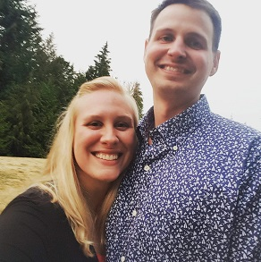
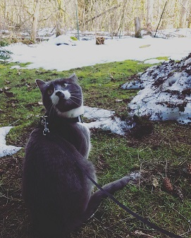
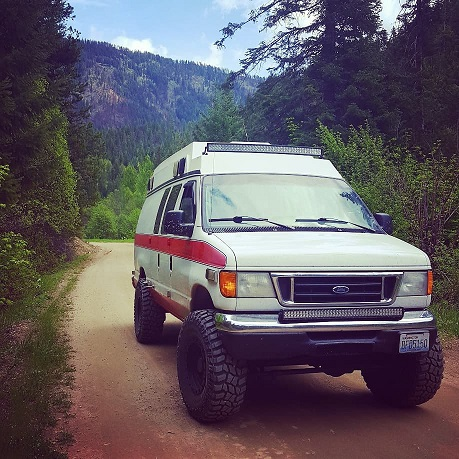

Hello and welcome to my adventure blog! My name is Andrea and this is my
husband Rob.
If you are looking for some ideas about where to plan your next
trip or lists of what to pack, you have come to the right place!
My husband and I have been camping and outdoor adventuring together
for six years now. We enjoy: hiking, kayaking, mountain bikes, dirt
bikes, and our ambo van, Van Wilder.
~Where have we been~
Our camping adventures have taken us to a lot of cool places over the years. We are planning on taking a cross country trip for upwards of a year in hopes of visiting every state ajd seeing everything that the U.S. has to offer.- Washington
- Oregon
- Idaho
- California
- Nevada
- Utah
~Chester~
We have one additional family member and he goes by the name Chester. He isn't a camper yet but he is a camp cat in training. He has been walking on a leash and harness since he was about 5 months old. We hope to get him out on a camping trip soon!
The story of: Van Wilder
In the beginning of summer 2017 we drove down to a little town outside of Mt. Rainier to buy our adventure van. We had been talking about getting a van to convert into a camper on and off for a couple of years but it was never the right van. When I say it was never the right van I don't mean, in our hearts it wasn't right. I mean Rob was looking for some very specific features that would make our adventure rig the most reliable it could be. When we got there, it was 100% an ambulance. Nothing had been removed or modified in any way after it had been retired. We got it home and so began the adventures of Van Wilder. What was once just an ambulance is now a 9 1/2 ft tall mountain monster. There is still much work to be done, but that is just part of the fun.